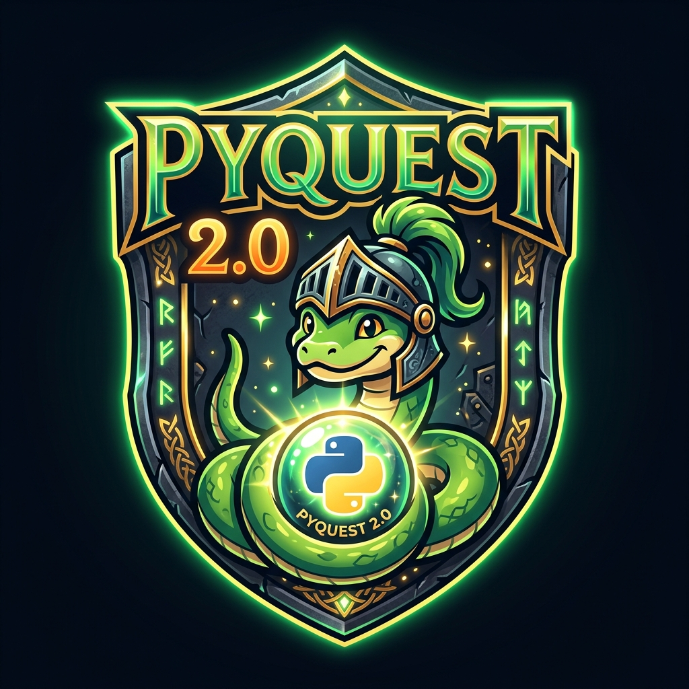
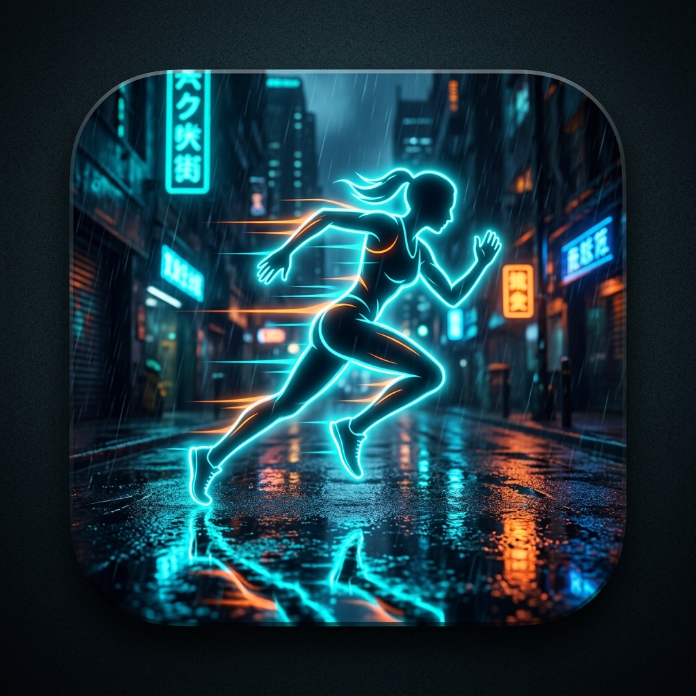

Desenvolvemos aplicativos utilitários e jogos mobile focados em experiências interativas de alta imersão, usabilidade tátil fluida e identidades visuais marcantes inspiradas nas estéticas retrô e cyberpunk.
Um puzzle relaxante e altamente tátil de encaixar blocos em uma grade cyberpunk. Elimine linhas e colunas enquanto ouve trilhas sonoras geradas em tempo real com harmonia relaxante.

Uma aventura de aprendizado interativa e gamificada para dominar os segredos da linguagem Python. Supere 15 fases sequenciais com desafios práticos de codificação, quizzes e um interpretador offline inteligente integrado.

Um app educacional focado no estudo prático de JavaScript. Com uma abordagem lúdica e missões interativas, você dominará desde os conceitos básicos até o desenvolvimento de aplicações web dinâmicas.
Um app de treinos completo projetado para maximizar a sua performance. Acompanha um companion app dedicado para Wear OS que monitora suas séries, repetições e intervalos diretamente do seu pulso.
A CyberKid Studios nasceu com o objetivo de reimaginar puzzles clássicos em experiências de alta imersão sensorial e estética retro-cyberpunk. Hoje, estamos ampliando ativamente os nossos projetos e horizontes de atuação. Como desenvolvedores independentes, colocamos muito orgulho e empenho em construir nossos aplicativos de forma 100% autônoma.
Para que isso seja possível, contamos com uma equipe de testes incrivelmente competente e dedicada, que nos ajuda a refinar a experiência do usuário e garantir o mais alto nível de qualidade e estabilidade em cada lançamento.
Nossos projetos utilizam a tecnologia Capacitor para garantir máxima fluidez e compatibilidade em plataformas móveis nativas e wearables.